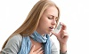

Веб сторінка – «Березюк Анна Василівна»АСТМА
Астма (із грецької ἅσθμα, ásthma, «ускладнене дихання») — звичайне хронічне запальне захворювання дихальних шляхів, яке визначають за різноманітними поновлюваними симптомами, оборотною обструкцією дихальних шляхів та бронхоспазмом. Типові симптоми включають хрипи, кашель, стиснення у грудях та задишку. Симптоми, характерні для бронхіальної астми:
важке дихання, що чути на відстані,
ядуха,
нестача повітря,
нічний кашель,
відчуття важкості у грудній клітці.
Лікування бронхіальної астми
Основними лікарськими засобами при лікуванні бронхіальної астми є
:
1. гормональні препарати, що діють місцево на бронхіальну систему(інгаляційні стероїди). Вони
контролюють перебіг бронхіальної астми
знижують кількість загострень симптомів
2. модифікатори лейкотрієнів(речовин,що відповідають за виникнення спазму м'язів бронхів та за виділення великої кількості слизу і рідини). Вони
допомагають контролювати перебіг хвороби
блокують активність лейкотрієнів.
3. Інгаляційні відхаркуючі засоби, засоби, що полегшують відходженню мокроти.
Крім лікарських препаратів,у лікуванні бронхіальної астми важливу роль відіграють інші методи.
1.Галоспелеотерапія (соляна кімната)- має протизапальну, протиалергічну дію, сприятливо впливає на легеневе дихання, на імунну систему, покращує функцію легенів. Здатна знімати легкі приступи ядухи, нормалізує рівень багатьох показників крові.
2.Виключення чи максимальне зниження впливу алергенів
3.Дієтотерапія(виключення з раціону риби, сиру, цитрусових, шоколаду, яєць- речовин, що можуть викликати алергію)
4.Психотерапія
5.Дихальна гімнастика(підвищує функціональні можливості дихальної системи,зробить дихання більш вільним)
6.Лікувальний масаж(знімає відчуття втоми м'язів, покращує виділення харкотиння)
7.Голкорефлексотерапія.
